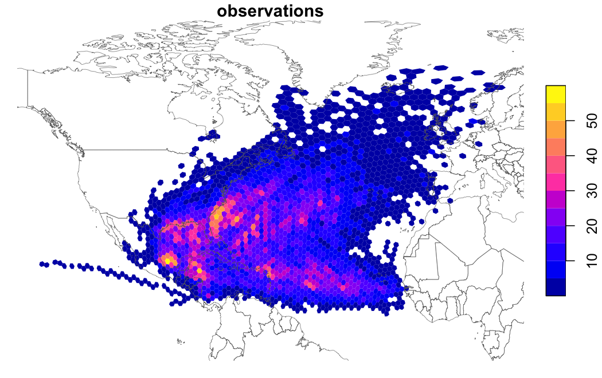

globalhex divides the whole Earth into equal-area hexagons and gives you tidy tools to work with them. Every cell at a given resolution covers the same area, anywhere on the globe, so counts and averages are directly comparable, unlike latitude/longitude grids, whose cells shrink toward the poles. Cells nest into coarser parents, so you can summarize the same data at many scales.
If you have used H3, the function names will feel familiar. Under the hood, globalhex uses DGGRID’s IGEO7 grid, which is equal-area where H3 is not.
Installation
install.packages(
"globalhex",
repos = c("https://flmnh-ai.r-universe.dev", "https://cloud.r-project.org")
)Example
Find the cell containing a point, then explore around it:
library(globalhex)
gainesville <- point_to_cell(c(-82.32, 29.65), resolution = 7)
gainesville
#> <globalhex_cell[1]>
#> [1] 020050152
cell_center(gainesville)
#> # A tibble: 1 x 3
#> cell lon lat
#> <gh_cell> <dbl> <dbl>
#> 1 020050152 -82.4 29.6
cell_neighbors(gainesville)
#> # A tibble: 6 x 2
#> origin cell
#> <gh_cell> <gh_cell>
#> 1 020050152 020050156
#> 2 020050152 020050105
#> 3 020050152 020050101
#> 4 020050152 020050114
#> 5 020050152 020050153
#> 6 020050152 020050150
cell_parent(gainesville)
#> <globalhex_cell[1]>
#> [1] 02005015Results are tibbles, so they work with dplyr and the rest of the tidyverse.
Binning points is one call. Here are about 20,000 Atlantic storm observations from dplyr::storms, counted in cells:
storms <- dplyr::storms
cells <- point_to_cell(storms[c("long", "lat")], resolution = 6)
counts <- hex_data(cells, observations = 1L)
plot(counts, fun = sum, resolution = 4, border = NA, reset = FALSE)
# Add coastlines for context
world <- sf::st_as_sf(maps::map("world", plot = FALSE, fill = TRUE))
plot(sf::st_geometry(world), add = TRUE, border = "grey40", lwd = 0.4)
hex_data() keeps your data as cell IDs. Hexagon polygons are only built for what is drawn, after values are summed up to the display resolution, so plotting millions of cells stays fast.
What you can do
-
Locate:
point_to_cell(),cell_center(),cell_boundary() -
Explore neighborhoods:
cell_neighbors(),cell_disk(),cell_ring(),cell_distance() -
Change scale:
cell_parent(),cell_children(),cell_aggregate() -
Map:
hex_data()withplot(),sf::st_as_sf()for polygons -
Bring in other data:
cell_cover()for polygons;raster_to_cell(),cell_extract(), andcell_sample()for rasters
Learn more
Full documentation lives at https://flmnh-ai.github.io/globalhex/.
-
vignette("globalhex"): grids, cells, resolutions, and saving cells -
vignette("plotting"): mapping large datasets -
vignette("rasters-and-polygons"): moving raster and vector data onto cells
Related work
- DGGRID, by Kevin Sahr, generates the grids. globalhex bundles a copy, so there is nothing else to install.
- dggridR wraps an older DGGRID without the IGEO7 grid.
- h3jsr provides Uber’s H3 grid in R.
globalhex is not affiliated with DGGRID, dggridR, or H3. It is licensed under AGPL-3.0-or-later because it bundles DGGRID.